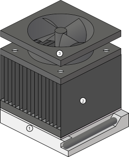

CPU Diagnostics
Possible Causes for CPU Test Failure:
- Bad electrical contact - Remove the CPU and reseat it to ensure good contact.
- Heat sink failure - Ensure conductive paste is present between CPU and heat sink.
- Fan failure - Ensure that CPU fan power is plugged in to motherboard.
Click the Back button to view the test report, or press "F5" to restart the test.
